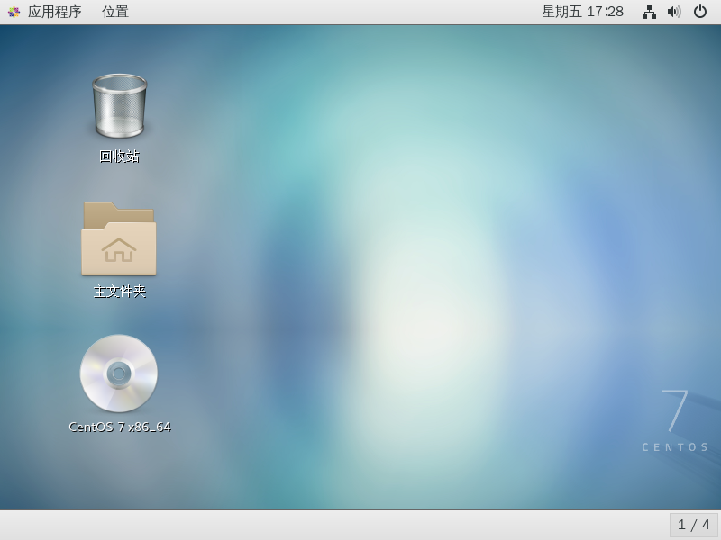
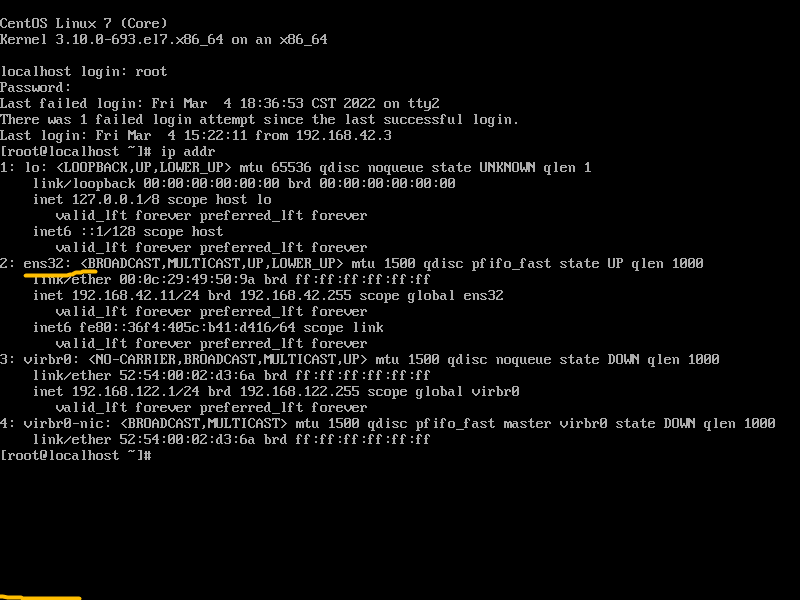
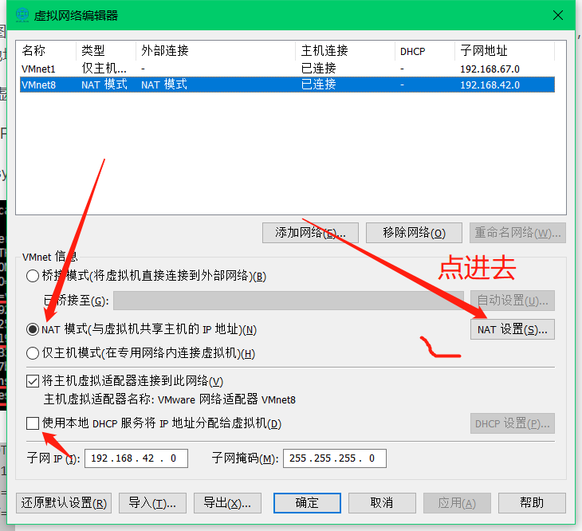
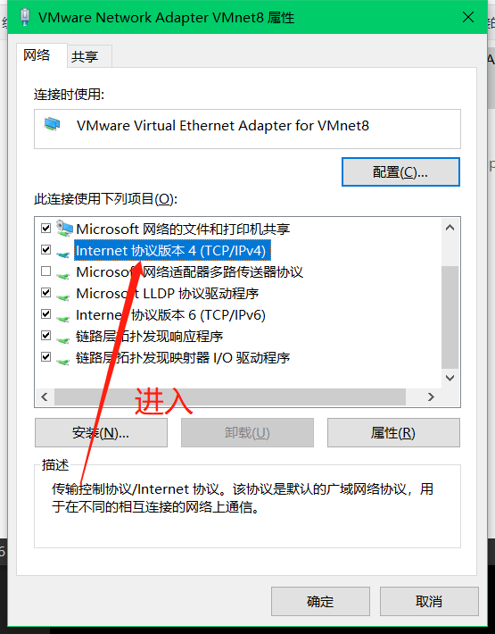

SSH连接本地linux系统
前提：安装好centerOS系统并能启动

目标：连通外网并设置SSH
1.网卡配置文件路径
打开linux本地终端 快捷键一般是ctrl+alt+f2(f1~f3)

这里是管理员登录,密码是隐藏式的输入(输入看不见)
这样就显示成功登录了！
下面查看网卡配置：
首先查看网卡地址：
输入
1
2
| ip addr
192.168.177.128/24177
|

地址为：ens32
输入cat /etc/sysconfig/network-scripts/ifcfg-ens32
sudo管理员模式
1
| sudo cat /etc/sysconfig/network-scripts/ifcfg-ens32
|

我们需要配置以下参数：
1
2
3
4
5
| BOOTPROTO=static
IPADDR=192.168.44.3
NETMASK=255.255.255.0
GATEWAY=192.168.44.1
ONBOOT=yes
|
一般采用vi编辑模式,我这里不知道什么原因，就采用命令方式配置了
2.修改ONBOOT值从no改为yes： 激活网卡
1
| sed -i 's/ONBOOT=no/ONBOOT=yes/g' /etc/sysconfig/network-scripts/ifcfg-ens32
|
或者用下面这条命令
1
| sed -i 's/ONBOOT=.*/ONBOOT=yes/g' /etc/sysconfig/network-scripts/ifcfg-ens32
|
3.修改BOOTPROTO值从dhcp改为static： 静态IP
1
| sed -i 's/BOOTPROTO=dhcp/BOOTPROTO=static/g' /etc/sysconfig/network-scripts/ifcfg-ens32
|
或者用下面这条命令
1
| sed -i 's/BOOTPROTO=.* /BOOTPROTO=static/g' /etc/sysconfig/network-scripts/ifcfg-ens3
|
4.配置网卡IP
配置虚拟机网络设置

配置网络虚拟

1
| echo 'IPADDR=192.168.248.11' >> /etc/sysconfig/network-scripts/ifcfg-ens33
|
注意：这里的192.168.248.11 要和你的VMnet8网卡保持在同一网段(ssh连接地址)
VMWare软件左上角 编辑–>虚拟网络编辑器–>VMnet8后面是 192.168.42.1

5.配置网络掩码
1
| echo 'PREFIX=24' >> /etc/sysconfig/network-scripts/ifcfg-ens32
|
6.配置网关
1
| echo 'GATEWAY=192.168.42.1' >> /etc/sysconfig/network-scripts/ifcfg-ens32
|
VMWare软件左上角 编辑–>虚拟网络编辑器–>VMnet8 NAT设置里可以看到是192.168.42.1
7.配置DNS
1
| echo 'DNS1=119.29.29.29' >> /etc/sysconfig/network-scripts/ifcfg-ens33
|
这里是255.255.255.0以内
8.重启网卡
1
| systemctl restart network
|
9.检查是否连通外网
1
| ping [www.baidu.com](http:
|

出现数据传输说明成功了！
10.配置本机windows
找到这个


 配置参照自己配的虚拟机参数！
配置参照自己配的虚拟机参数！
！

11.连接SSH
我们使用xshell连接虚拟机


输入账户密码
12.尝试网络连接

成功！